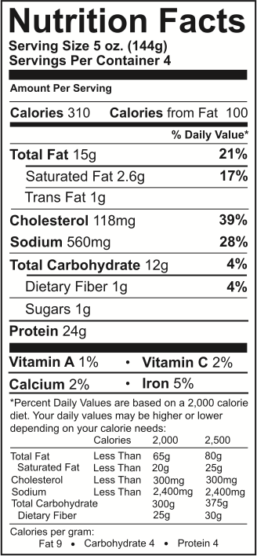

ملصقات الطعام
توفر ملصقات الطعام معلومات قيمة عن الأكل الصحي. يمكن أن تكون جميع الحقائق والمعلومات على ملصقات الطعام سهلة الفهم مع هذه النصائح:

- قارن حجم الحصة المذكورة على الملصق مع حجم الحصة التي يجب ان تتناولها
- تحقق من المواد الغذائيه العاليه والمنخفضه في حصص الطعام عن طريق التحقق من النسبة المئوية على الملصق
- الجزء الأكثر أهمية في الملصق هو كمية الكربوهيدرات في الحصة الواحدة، اهدف لتناول حصة ثابتة من الكربوهيدرات في كل وجبة
يتم ترتيب المكونات على حسب الوزن والكمية من الأكبر الى الأصغر.
نصيحة دروبي:
حاول إستبدال السكر بمحليات منخفضة السعرات الحرارية ( السكرين، الأسبارتام، الأسيسولفام K ، سكرالوز، ستيفيا...) التي ليس لها تأثير على مستويات السكر في الدم. جرب أنواع مختلفة من المحليات أو اخلطها مع السكر.